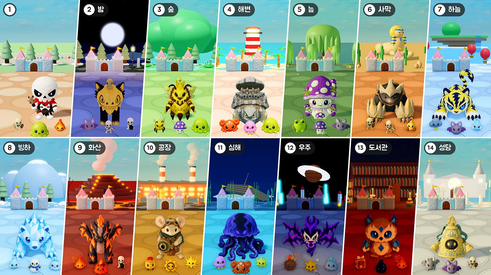

소식
패치 노트MonChexx 패치 노트: 능력치 뽑기 전설 · 다시 뽑기패치 노트MonChexx 패치 노트: 갈증의 목걸이 · 버그 수정패치 노트MonChexx 패치 노트: 요새 보호 · 같이 하기 순위 · 버그 수정패치 노트MonChexx 패치 노트: 요새 수리 · 능력치 증강 · 연출 · 패드 조작패치 노트MonChexx 패치 노트: 능력치 증강 · 스테이지 표시 · 기록판 콘텐츠 업데이트시즌 1 · 업데이트 02: 진화의 파동패치 노트MonChexx 패치 노트: 밸런스 · 전투 시스템
콘텐츠 업데이트시즌 1 · 업데이트 02: 진화의 파동패치 노트MonChexx 패치 노트: 밸런스 · 전투 시스템

패치 노트MonChexx 패치 노트: 스테이지 · 2배속 · 소환수패치 노트MonChexx 패치 노트: 아이템 뽑기 · 특수 뽑기 · 보스 등장 · 점수패치 노트MonChexx 패치 노트: 자동 넘김 · 늘어나는 보스 · 보스 체력 막대 · 점수 · 점화의 깃발패치 노트MonChexx 패치 노트: 마나 샘 · 점프로 별 줍기 · 어비젤 역할 변경패치 노트MonChexx 패치 노트: 아이템 드랍과 등급 · 무덤 · 세레니스 조정패치 노트MonChexx 패치 노트: 역할 개편과 역할 특성콘텐츠 업데이트시즌 2 · 새 모드: 요새 지키기패치 노트MonChexx 패치 노트: 스킬의 공격 판정패치 노트MonChexx 패치 노트: 공격 판정 · 기술력패치 노트MonChexx 패치 노트: 로비 · 도감패치 노트MonChexx 패치 노트: 째깍기어 개편 · 태세 연출패치 노트MonChexx 패치 노트: 돌부기 조정 · 편의 개선 · 버그 수정패치 노트MonChexx 패치 노트: 인형 5종 조정패치 노트MonChexx 패치 노트: 전투 템포 · 스킬콘텐츠 업데이트시즌 1 · 업데이트 02: 진화의 파동패치 노트MonChexx 패치 노트: 밸런스 · 전투 시스템